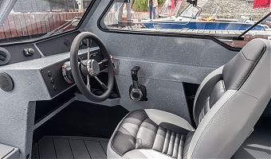
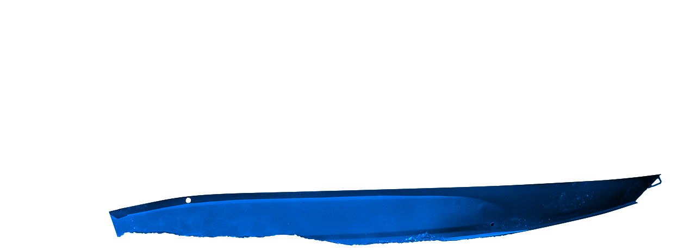

Кабинный формат
без лишней тяжести
Защищённое пространство и продуманный кокпит — чтобы не выбирать между комфортом и настоящей водой.
↗Независимое сообщество владельцев и поклонников YAVA XL COB: опыт эксплуатации, доработки, моторы, оснащение, рыбалка, путешествия и живое общение.
YAVA XL COB собрана вокруг сценария, а не вокруг витрины. Утренний выход на рыбалку, семейный маршрут, прохладный вечер на воде — всё начинается с уверенности в том, что на борту удобно.
Защищённое пространство и продуманный кокпит — чтобы не выбирать между комфортом и настоящей водой.
↗Ветровое стекло, боковые окна и cabin-компоновка помогают продлить сезон.
Практичная основа для воды, прицепа и долгих разговоров о доработках.
Баланс габаритов, вместимости и пространства для своего маршрута.
Эхолот, отопитель, тент, свет, прицеп — владельцы знают, как собрать свою версию.
В клубе обсуждают то, что происходит на воде: честно, конкретно, с фотографиями и цифрами.
Зачем вступать ↗
02 / CABINВ YAVA XL COB есть редкое сочетание: компактность, защищённость и открытость к настройке под себя. Поэтому у каждой лодки со временем появляется свой характер — и свой список любимых решений.
Официальные параметры YAVA XL COB — в одном месте, без мелкого шрифта. Сохраняйте, сравнивайте, задавайте вопросы владельцам.
Параметры приведены по официальной странице модели VBOATS; комплектация и характеристики могут обновляться производителем.
Пять зон, в которых чувствуется практичный подход: от корпуса и топлива до света в кабине. Переключайтесь между вкладками.
Собрали несколько официальных кадров в новую композицию — ближе к реальной жизни владельцев: вода, детали, пространство и цвет.
На официальной странице доступны разные варианты окраски борта. Переключите оттенок и посмотрите, как меняется настроение.

YAVA XL COB / СинийОдин и тот же корпус может стать разным инструментом. Всё зависит от того, зачем вы выходите из марины.
Пространство для снастей, эхолота и раннего старта без суеты.
точность / тишинаКабина, мягкий салон и место, где удобно переждать ветер.
вместе / спокойноКогда хочется увидеть новый берег, а не только новую точку на карте.
дальше / глубжеЗащита от прохладной погоды продлевает личный сезон на воде.
ветер / маршрутЭлектрика, отопители, тенты, прицепы и свои решения — в клубе всегда есть с чего начать.
собрать / настроитьЛодка становится лучше, когда за ней есть живое сообщество, которое отвечает.
Перейти к клубу ↗В Telegram уже можно обсуждать то, что обычно выясняется только на воде: какой винт выбрать, куда поставить эхолот, как организовать свет, отопление, тент или прицеп.
Перейти в Telegram ↗Если вопроса нет в списке — задайте его в Telegram. В этом и есть смысл клуба.
Задать вопрос ↗Независимое Telegram-сообщество владельцев и поклонников модели — для обмена опытом, идеями, фотографиями и полезными решениями.
Нет. Это самостоятельный клуб владельцев. Права на бренды и официальные материалы принадлежат соответствующим правообладателям.
Эксплуатацию, моторы и винты, эхолоты, электрику, отопители, тенты, прицепы, маршруты и дооснащение.
Да. Здесь можно спокойно изучить характеристики YAVA XL COB и спросить владельцев о реальном опыте.
Конечно. Интерес к модели — достаточная причина присоединиться и задать свои вопросы.
Сообщество создано именно для живого опыта: с фотографиями, конкретными настройками и обсуждением ситуаций на воде.
В Telegram-группе. Там можно описать задачу, приложить фото и получить несколько практичных мнений.
Нажмите любую кнопку «Вступить в Telegram» или откройте t.me/yavaxlcob.
Если вам интересна YAVA XL COB — заходите в Telegram. Там владельцы, реальные обсуждения, опыт эксплуатации и полезные советы.
Вступить в Telegram ↗